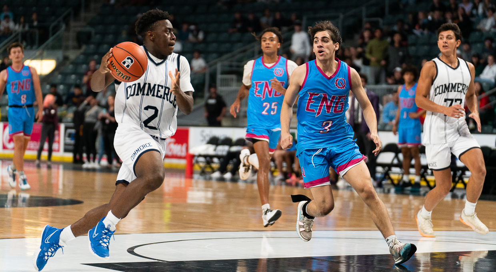
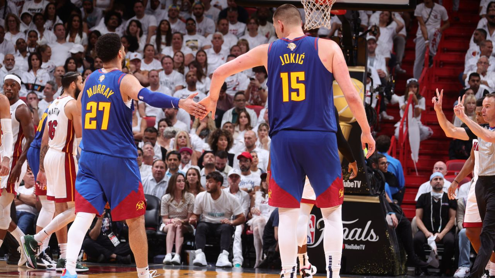
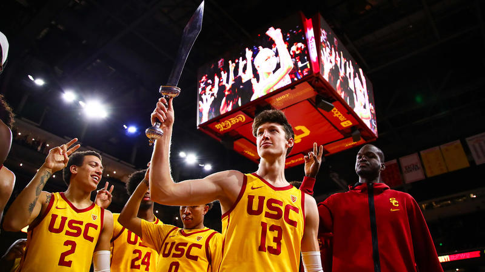

Overview
Basketball is a dynamic team sport played by two teams, each fielding five players at a time. The primary objective is to score points by shooting the basketball through the opponent's hoop. Points can be earned via field goals, which are shots from various locations on the court, and free throws, awarded after certain fouls. These can vary from being worth 1 to 3 points depending on the situation. The game unfolds in four quarters, each lasting 12 minutes in the NBA or 10 minutes in international play or the standard for many American highschools, with overtime periods used to break ties after 4 quarters. Players assume different positions on the court (Point Guard, Shooting Guard, Small Forward, Power Forward, and Center), each with specific roles and responsibilities, and the sport is governed by a set of rules that cover dribbling, passing, shooting, and various violations, including fouls. Strategy plays a crucial role in basketball, with teams employing offensive and defensive tactics, such as fast breaks and rebounding, to outmaneuver their opponents.
Basketball's global appeal transcends borders and cultures, making it one of the most widely followed and played sports worldwide. The sport's popularity extends far beyond professional leagues like the NBA and WNBA in the United States. In countries around the world, basketball courts can be found in urban neighborhoods, rural communities, and schoolyards, serving as gathering places for enthusiasts of all ages. Local and national basketball leagues exist in many countries, contributing to the sport's global reach. Basketball has also become a cornerstone of international competition. The Olympic Games, FIBA Basketball World Cup, and various continental championships showcase the world's best talent and foster a sense of national pride. Legendary players like Michael Jordan, LeBron James, Kobe Bryant, and Tim Duncan, to name just a few, have not only achieved great success on the court but have also become cultural icons, transcending the boundaries of sport to influence fashion, entertainment, and philanthropy. The sport's cultural impact is evident in the widespread popularity of basketball sneakers, jerseys, and urban streetball culture. Furthermore, basketball's inclusivity is a significant part of its appeal. It is a sport that can be enjoyed by people of all ages, sizes, and skill levels. From informal pick-up games on neighborhood courts to organized youth leagues and senior citizen leagues, basketball provides opportunities for individuals to stay active, connect with others, and embrace the spirit of competition. Its emphasis on teamwork, communication, and camaraderie fosters valuable life skills beyond the court. In essence, basketball's global influence is not solely rooted in its competitive nature, but also in its ability to bring people together, promote athleticism, and inspire a sense of community that transcends borders and languages.
NBA
The National Basketball Association (NBA) is one of the premier professional basketball leagues in the world. Founded in New York City on June 6, 1946, the NBA has grown to become a global phenomenon, captivating fans with its high-paced and competitive style of play. The league is composed of 30 teams, divided into two conferences: the Eastern Conference and the Western Conference, each further divided into three divisions. The NBA season typically runs from October to April, followed by the playoffs, culminating in the NBA Finals, where the conference champions compete for the coveted Larry O'Brien Championship Trophy.
The NBA is renowned for its roster of talented athletes, including some of the greatest basketball players in history, such as Michael Jordan, LeBron James, Kobe Bryant, and Shaquille O'Neal. The league has also expanded its international reach, with players from around the world making significant impacts on the game. The NBA's global appeal has led to the establishment of a massive fanbase, both domestically and internationally, with millions of viewers tuning in to watch games and support their favorite teams. Off the court, the NBA has been at the forefront of social and cultural issues, with players and teams actively participating in community outreach, charitable endeavors, and advocacy for social justice causes. The league's influence extends beyond basketball, making it a prominent force in the world of sports and beyond. Overall, the NBA remains a dynamic and influential sports league that continues to captivate fans and shape the cultural landscape.
Basketball at USC
Basketball at the University of Southern California (USC) holds a significant place in the school's athletic tradition. USC, located in Los Angeles, California, is a member of the Pac-12 Conference and competes at the NCAA Division I level in basketball. The USC Trojans, as they are known, have a rich history and a strong presence in the college basketball scene. The USC Trojans' basketball program features both men's and women's teams. The men's team, based at the Galen Center, has a storied history with numerous NCAA Tournament appearances and has produced several NBA talents over the years. The women's team, equally competitive, has made its mark in women's college basketball and has a dedicated fan base.
USC's basketball games offer an exciting and electric atmosphere, particularly during rivalry matchups against teams like UCLA and Stanford. The Trojans also have a dedicated fan base, known for their passion and support during home games, and offer free tickets to its students. USC basketball provides students and the local community with an opportunity to witness high-level college basketball and experience the camaraderie that comes with being part of a collegiate sports culture. In addition to the on-court action, USC's basketball programs also prioritize the academic success and personal development of student-athletes, emphasizing the importance of a well-rounded education alongside their athletic pursuits. This commitment to excellence both on and off the court is a hallmark of USC's basketball programs.
USC students interested in playing basketball can choose from various options. Intramural basketball is available for casual play and is open to all skill levels. For those seeking a more competitive experience, USC have a club basketball team that competes against other universities. Walk-on tryouts are an option for highly skilled players who aspire to join USC's NCAA Division I basketball teams, though competition for these spots is intense. Additionally, students can look for local recreational leagues or pick-up games for a more casual basketball experience. USC's intramural sports program hosts basketball tournaments and events, and students can also support the USC basketball teams as fans by attending games and participating in school spirit activities. To get involved, students should monitor USC's official channels for announcements and reach out to relevant student organizations or the athletic department for more information on basketball opportunities on campus.